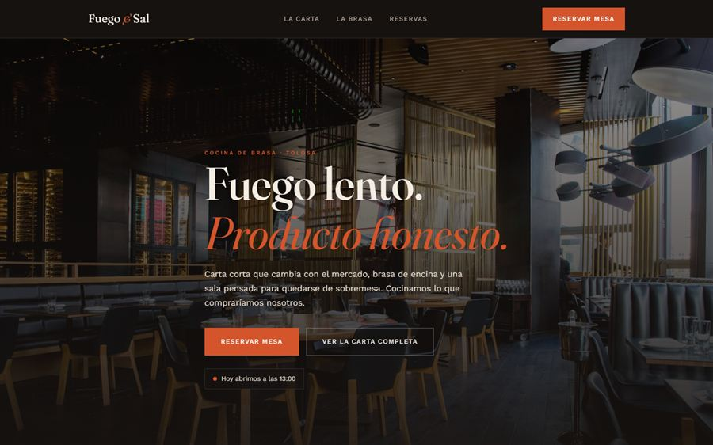

El error que comete casi todo el mundo
Un cliente potencial está en la calle, con hambre, mirando el móvil. Busca tu restaurante. Y se encuentra con una web donde la carta es un PDF que hay que descargar, ampliar con los dedos y girar la pantalla para leer. Se va al restaurante de al lado. No porque la comida sea peor: porque no ha podido ver qué tienes.
La web de un restaurante tiene un trabajo muy concreto y muy corto: responder en diez segundos a qué comes aquí, cuánto cuesta, cuándo abre y cómo reservo. Todo lo demás es decoración.
La carta: en HTML, nunca en PDF
Es el cambio con más impacto y el que más se ignora. Una carta escrita como página web se lee bien en cualquier móvil, se actualiza en dos minutos cuando cambias un plato o un precio, y Google la indexa — es decir, puedes aparecer cuando alguien busca "dónde comer bacalao en Tolosa".
Un PDF no se lee bien en móvil, no lo indexa igual y cada cambio obliga a rehacer el archivo entero. Si solo puedes cambiar una cosa de tu web actual, cambia esto.
| Elemento | Carta en PDF | Carta en HTML |
|---|---|---|
| Se lee bien en móvil | ✗ | ✓ |
| Google indexa los platos | Apenas | ✓ |
| Actualizar un precio | Rehacer el PDF | 2 minutos |
| Marcar alérgenos | Difícil | ✓ |
| Carga rápido en 4G | ✗ | ✓ |
Lo que sí tiene que estar, y arriba
- Horario actualizado, incluidos festivos y el día de cierre. Es lo que más se busca.
- Teléfono como botón, no como texto: que al tocarlo llame directamente.
- Cómo llegar, con enlace a Google Maps y una nota sobre aparcamiento si es un problema en tu zona.
- Reservar, visible sin hacer scroll. Aunque sea un botón de WhatsApp.
- Fotos reales de tus platos. Nada de fotos de banco de imágenes: se nota, y resta credibilidad.

¿Tu carta está en PDF?
Te digo gratis qué está fallando en la web de tu restaurante: velocidad, carta, móvil y ficha de Google.
Reservas: el cliente no quiere llamar
Mucha gente decide dónde cenar a las once de la noche del día anterior, o mientras va en el autobús. En ese momento no va a llamarte — o reserva desde el móvil, o busca otro sitio.
Tener reservas online no significa montar un sistema caro. Hay tres niveles, y el primero ya resuelve la mayoría de casos:
- Botón de WhatsApp con el mensaje ya escrito ("Hola, quiero reservar mesa para..."). Coste cero, y funciona sorprendentemente bien.
- Formulario de reserva que te llega al email o al WhatsApp. Sin gestión de disponibilidad, pero ordenado.
- Sistema con calendario que evita dobles reservas y confirma solo. Es lo que monto en el chatbot de reservas.
Sin ficha de Google, la web sirve de poco
En hostelería, la mayoría de la gente no llega a tu web desde Google: llega a tu ficha de Google Business, con las fotos, las reseñas y el botón de "cómo llegar". La web refuerza esa ficha y le da credibilidad, pero la ficha es la puerta de entrada.
Si solo vas a trabajar una cosa este mes, que sea la ficha: fotos actuales, horario correcto, y responder a todas las reseñas. Lo explico paso a paso en la guía de SEO local.
"En hostelería el 80% de las visitas a la web son desde el móvil y duran menos de treinta segundos. Diseño primero la versión de móvil y solo después la de ordenador — al revés es como se acaba con una web preciosa en pantalla grande e inservible donde de verdad la miran."
Lo que puedes quitar sin miedo
- El vídeo de fondo pesado en la portada: multiplica el tiempo de carga y nadie lo ve entero.
- La galería de treinta fotos. Con ocho buenas basta.
- La página "Nuestra filosofía" de tres párrafos. Ponlo en dos frases dentro de la portada.
- La música automática. Nunca. Por favor.
Preguntas frecuentes
¿Merece la pena una web si ya tengo Google y redes sociales?
Sí, porque la ficha de Google y las redes no te pertenecen y no permiten explicar tu carta ni gestionar reservas a tu manera. La combinación que funciona es: ficha de Google como puerta de entrada, web propia como sitio donde el cliente decide.
¿Puedo actualizar la carta cuando cambian los platos o precios?
Sí. Me escribes con los cambios y actualizo la carta en poco tiempo. Los primeros 30 días está incluido; después, con el mantenimiento mensual, lo resuelvo cuando lo necesites.
¿Cuánto cuesta la web de un restaurante?
Precio cerrado: desde 199€ una landing con carta y contacto, y desde 299€ una web completa con carta, reservas y SEO local. Sin cuotas escondidas.
¿Necesito fotos profesionales de los platos?
Ayudan mucho, pero no son imprescindibles para empezar. Fotos de móvil bien hechas con luz natural funcionan; lo que no funciona son las fotos de banco de imágenes, porque el cliente las detecta y pierde confianza.
¿Tienes un bar o restaurante y quieres una web que trabaje para ti? Escríbeme y te preparo una propuesta en 48 horas. Puedes ver antes el proyecto de restaurante publicado o los precios cerrados.